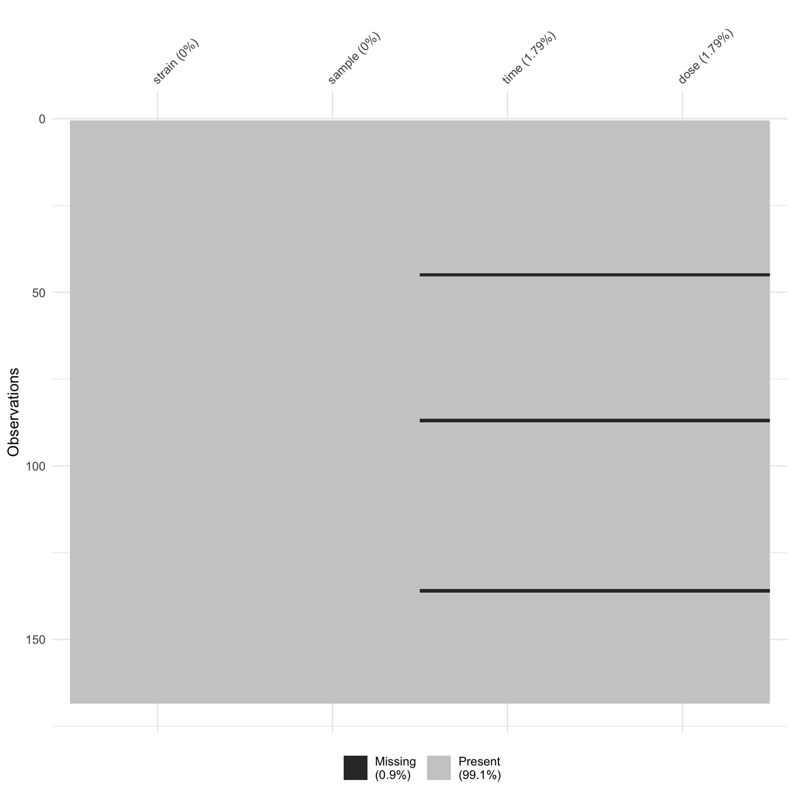

R, in particular the data.frameWhen working in R, there are some functions and data sets that are always available, but the real strength of R comes from its community of developers who continually improve the set of available features and add additional functionality through an ecosystem of “packages”.
The following packages have already been installed in RStudio Cloud, but you might need to install them when working on your own machine using install.packages("name_of_package_to_be_installed").
Before we take a dive into the tidyverse, let’s take a minute to learn a bit variable types in R. The reason that we want to do this is because everything in R is stored as an object which ultimately determines its behaviour.
obj1 = c(TRUE, FALSE)
obj1
class(obj1)
obj2 = 1:5
obj2
class(obj2)
obj3 = rnorm(5)
obj3
class(obj3)
obj4 = c("a", "b")
obj4
class(obj4)
obj5 = c(obj1, obj2)
obj5
class(obj5)
obj6 = list(obj1, obj2)
obj6
class(obj6[[1]])
class(obj6[[2]])
data(diamonds, package = "ggplot2")
diamonds
class(diamonds)
dplyr::glimpse(diamonds)In this session, we will read in a Excel dataset (.xls format). We will use the readxl package to perform this task.
Of course, .xls is not the only data type that R can deal with. Have a look at this cheatsheet to see some data types that the readr package is able to handle. If you want to read in SAS or SPSS files, have a look at the haven package.
The read_excel() function from the readxl package is perfect to read in a .xls file, let’s try that!
Oh, no! We seemed to read in a very ugly dataset. What happened?
If we open the sample_data.xls file in Excel, we see that R didn’t do anything wrong! It actually faithfully read in everything that you can see in the Excel sheet.
This .xls file is poorly formatted with the first three rows being notes that are not part of the data table. We should ask the function read_excel to skip the first three rows, use the 4th row as the column headings. How can we do that?
We use the skip argument to the read_excel() function. Have a look at this!
The column names of this dataset isn’t quite as nice as we would like.
We can tidy them using the clean_names() function from the janitor package. Even though this package is not officially part of the tidyverse, it is a very useful package nonetheless.
We can see the new column names:
Note that we have also used the pipe operator, %>%, which passes the results from one function into the next function. In the above case, these two lines of code would give identical results:
raw_data %>% janitor::clean_names()
janitor::clean_names(raw_data)We will use the pipe operator a lot over the next two days, it’s a game changer for the way you write R code.
We will now use the dplyr package to perform some basic data cleaning. The dplyr package is one of the most popular packages in the tidyverse. Its main functions are designed to interact with the data.frame object in R in a very intuitive way. This is why its name is an excellent pun: it is a plyer for data frames (okay, maybe it depends on your sense of humour).
Let’s see dplyr in action. If we want to select only the strain column of this data, then we can use dplyr::select().
If we wanted the strain variable as a vector (i.e. not inside a dataframe object) we use dplyr::pull().
If we want to select multiple columns in the data, we could include more names (unquoted) into the dplyr::select() function.
However, sometimes it is useful to select columns using a character vector, especially considering the “dose” column has a Greek symbol (nano-gram) inside.
# select using unquoted column names
clean_col_data %>%
dplyr::select(strain, sample) %>%
dplyr::glimpse()
# or the first four columns
clean_col_data %>%
dplyr::select(1:4) %>%
dplyr::glimpse()
# a range of columns
clean_col_data %>%
dplyr::select(strain:rin) %>%
dplyr::glimpse()
# columns starting with a particular string
clean_col_data %>%
dplyr::select(starts_with("s")) %>%
dplyr::glimpse()
# select using character vector
select_columns = colnames(clean_col_data)[1:4]
sub_data = clean_col_data %>%
dplyr::select(one_of(select_columns))
glimpse(sub_data)We can also rename the columns.
The dplyr::mutate() function does exactly what you would expect: it changes an entire column. It has the structure that new column = some changes to the (old column).
If the new column has the same name as the old column, then this column will be over-written.
When we mutated our data, we saw that there was a warning message, NAs introduced by coercion. The NA is is R’s way to represent a missing value. So what happened?
If we have a quick look at the original xls file, we see that someone must have copied the data with the heading four times. This is why when we converted time into a numeric variable, R recognised the column headings in the middle of the data as weird values and assigned those with NA.
We can visualise NA in our data using the vis_miss() function from the visdat package.

We will now filtering out the three rows of column headings, which we have converted into NA in the time and dose columns.
We will use the filter() function from the dplyr package. The function takes in logical vectors of the same length as the nrow(data) as the input.
We will finish today’s session with something simple, but powerful.
If we want to create summary statistics of our data.frame, we need to think about which variable are we summarising over. In this case, we will count the number of samples for each of the strains.
Wickham et al., (2019). Welcome to the tidyverse. Journal of Open Source Software, 4(43), 1686, https://doi.org/10.21105/joss.01686